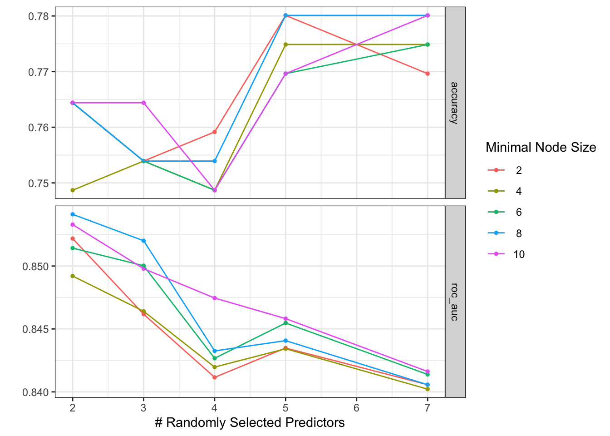
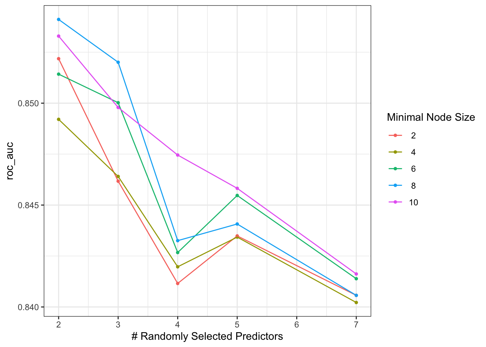

Random Forest Classification (tidymodels)
Goal
In this exercise you will:
- Fit a random forest classifier to the Pima Indians Diabetes data.
- Tune key hyperparameters using the tidymodels framework.
- Compare training vs test performance.
- Reflect on the benefits of using pipelines/workflows.
1. Setup
2. Data preparation and split
We will use the PimaIndiansDiabetes dataset, with outcome diabetes (pos = diabetes, neg = no diabetes).
data("PimaIndiansDiabetes")
pima <- PimaIndiansDiabetes %>%
as_tibble() %>%
mutate(
diabetes = factor(diabetes, levels = c("pos", "neg"))
)
levels(pima$diabetes)[1] "pos" "neg"head(pima)# A tibble: 6 × 9
pregnant glucose pressure triceps insulin mass pedigree age diabetes
<dbl> <dbl> <dbl> <dbl> <dbl> <dbl> <dbl> <dbl> <fct>
1 6 148 72 35 0 33.6 0.627 50 pos
2 1 85 66 29 0 26.6 0.351 31 neg
3 8 183 64 0 0 23.3 0.672 32 pos
4 1 89 66 23 94 28.1 0.167 21 neg
5 0 137 40 35 168 43.1 2.29 33 pos
6 5 116 74 0 0 25.6 0.201 30 neg Split into training (70%) and test (30%) sets, stratifying by the outcome so that the class balance is similar in both sets:
data_split <- initial_split(pima, prop = 0.7, strata = diabetes)
train_data <- training(data_split)
test_data <- testing(data_split)
dim(pima)[1] 768 9dim(train_data)[1] 537 9dim(test_data)[1] 231 93. Random forest model with tunable hyperparameters
We set up a random forest model where some hyperparameters are marked with tune():
-
mtry→ number of predictors randomly sampled at each split
-
min_n→ minimum number of observations in a terminal node
-
trees→ number of trees in the forest (we keep this fixed at 500)
To check what they mean remember to go to help pages: ,To check name of hyperparamters (remember model dependent!) can go here https://parsnip.tidymodels.org/reference/details_rand_forest_ranger.html
rf_spec <- rand_forest(
mtry = tune(),
min_n = tune(),
trees = 500
) %>%
set_engine("ranger") %>%
set_mode("classification")
rf_specRandom Forest Model Specification (classification)
Main Arguments:
mtry = tune()
trees = 500
min_n = tune()
Computational engine: ranger We also define a recipe that uses all predictors:
rf_rec <- recipe(diabetes ~ ., data = train_data)Now combine model + recipe into a workflow:
══ Workflow ════════════════════════════════════════════════════════════════════
Preprocessor: Recipe
Model: rand_forest()
── Preprocessor ────────────────────────────────────────────────────────────────
0 Recipe Steps
── Model ───────────────────────────────────────────────────────────────────────
Random Forest Model Specification (classification)
Main Arguments:
mtry = tune()
trees = 500
min_n = tune()
Computational engine: ranger 4. Hyperparameter grid and resamples
We want to search over a grid of values for mtry and min_n:
5. Tune the random forest with tune_grid()
Now we run the tuning. For each row in rf_grid, tidymodels:
- fits the model,
- computes performance metrics,
- stores the mean performance for that combination.
set.seed(123)
rf_res <- tune_grid(
rf_wf,
resamples = bootstraps(train_data, times = 1), #normally cross-validation here - but will learn about this later on.
grid = rf_grid,
metrics = yardstick::metric_set(yardstick::accuracy, yardstick::roc_auc)
)
rf_res# Tuning results
# Bootstrap sampling
# A tibble: 1 × 4
splits id .metrics .notes
<list> <chr> <list> <list>
1 <split [537/191]> Bootstrap1 <tibble [50 × 6]> <tibble [0 × 4]>5.1 Inspect and visualise the tuning results
Collect tuning results:
rf_metrics <- collect_metrics(rf_res)
rf_metrics# A tibble: 50 × 8
mtry min_n .metric .estimator mean n std_err .config
<int> <int> <chr> <chr> <dbl> <int> <dbl> <chr>
1 2 2 accuracy binary 0.764 1 NA pre0_mod01_post0
2 2 2 roc_auc binary 0.852 1 NA pre0_mod01_post0
3 2 4 accuracy binary 0.749 1 NA pre0_mod02_post0
4 2 4 roc_auc binary 0.849 1 NA pre0_mod02_post0
5 2 6 accuracy binary 0.764 1 NA pre0_mod03_post0
6 2 6 roc_auc binary 0.851 1 NA pre0_mod03_post0
7 2 8 accuracy binary 0.764 1 NA pre0_mod04_post0
8 2 8 roc_auc binary 0.854 1 NA pre0_mod04_post0
9 2 10 accuracy binary 0.764 1 NA pre0_mod05_post0
10 2 10 roc_auc binary 0.853 1 NA pre0_mod05_post0
# ℹ 40 more rowsautoplot(rf_res)
Filter by ROC AUC:
# A tibble: 25 × 8
mtry min_n .metric .estimator mean n std_err .config
<int> <int> <chr> <chr> <dbl> <int> <dbl> <chr>
1 2 2 roc_auc binary 0.852 1 NA pre0_mod01_post0
2 2 4 roc_auc binary 0.849 1 NA pre0_mod02_post0
3 2 6 roc_auc binary 0.851 1 NA pre0_mod03_post0
4 2 8 roc_auc binary 0.854 1 NA pre0_mod04_post0
5 2 10 roc_auc binary 0.853 1 NA pre0_mod05_post0
6 3 2 roc_auc binary 0.846 1 NA pre0_mod06_post0
7 3 4 roc_auc binary 0.846 1 NA pre0_mod07_post0
8 3 6 roc_auc binary 0.850 1 NA pre0_mod08_post0
9 3 8 roc_auc binary 0.852 1 NA pre0_mod09_post0
10 3 10 roc_auc binary 0.850 1 NA pre0_mod10_post0
# ℹ 15 more rowsPlot performance across hyperparameters:
autoplot(rf_res, metric = "roc_auc")
Exercise:
- Which combinations ofmtryandmin_nseem to work best?
- Do deeper / more flexible forests always perform better?
6. Final model with the best hyperparameters
Select the best hyperparameter combination according to ROC AUC:
best_rf <- select_best(rf_res, metric = "roc_auc")
best_rf# A tibble: 1 × 3
mtry min_n .config
<int> <int> <chr>
1 2 8 pre0_mod04_post0Finalise the workflow and fit one final model on the full training data:
final_rf_wf <- finalize_workflow(rf_wf, best_rf)
final_rf_fit <- final_rf_wf %>%
fit(data = train_data)
final_rf_fit══ Workflow [trained] ══════════════════════════════════════════════════════════
Preprocessor: Recipe
Model: rand_forest()
── Preprocessor ────────────────────────────────────────────────────────────────
0 Recipe Steps
── Model ───────────────────────────────────────────────────────────────────────
Ranger result
Call:
ranger::ranger(x = maybe_data_frame(x), y = y, mtry = min_cols(~2L, x), num.trees = ~500, min.node.size = min_rows(~8L, x), num.threads = 1, verbose = FALSE, seed = sample.int(10^5, 1), probability = TRUE)
Type: Probability estimation
Number of trees: 500
Sample size: 537
Number of independent variables: 8
Mtry: 2
Target node size: 8
Variable importance mode: none
Splitrule: gini
OOB prediction error (Brier s.): 0.1592148 7. Evaluate the final random forest
We now compare training and test performance.
# Training predictions
train_preds <- predict(final_rf_fit, train_data, type = "prob") %>%
bind_cols(predict(final_rf_fit, train_data, type = "class")) %>%
bind_cols(train_data)
# Test predictions
test_preds <- predict(final_rf_fit, test_data, type = "prob") %>%
bind_cols(predict(final_rf_fit, test_data, type = "class")) %>%
bind_cols(test_data)Define a metric set:
class_metrics <- yardstick::metric_set(
yardstick::accuracy,
yardstick::precision,
yardstick::recall,
yardstick::sens,
yardstick::specificity
)Compute metrics:
train_metrics <- train_preds %>%
class_metrics(truth = diabetes, estimate = .pred_class)
test_metrics <- test_preds %>%
class_metrics(truth = diabetes, estimate = .pred_class)
train_metrics# A tibble: 5 × 3
.metric .estimator .estimate
<chr> <chr> <dbl>
1 accuracy binary 0.978
2 precision binary 0.983
3 recall binary 0.952
4 sens binary 0.952
5 specificity binary 0.991test_metrics# A tibble: 5 × 3
.metric .estimator .estimate
<chr> <chr> <dbl>
1 accuracy binary 0.749
2 precision binary 0.683
3 recall binary 0.531
4 sens binary 0.531
5 specificity binary 0.867Also compare ROC AUC:
roc_auc(train_preds, truth = diabetes, .pred_pos)# A tibble: 1 × 3
.metric .estimator .estimate
<chr> <chr> <dbl>
1 roc_auc binary 0.999roc_auc(test_preds, truth = diabetes, .pred_pos)# A tibble: 1 × 3
.metric .estimator .estimate
<chr> <chr> <dbl>
1 roc_auc binary 0.820Exercise:
- Is there still a big gap between training and test performance?
- Compared to a basic (untuned) random forest, has the gap reduced?
Extra:
Now replicate this in Python, be sure to include these key functions:
rf_basic = RandomForestClassifier( random_state=123 )
rf_basic.fit(X_train, y_train)
accuracy_score
roc_auc_score
pipe = Pipeline( steps=[ (“rf”, RandomForestClassifier(random_state=123)) ] )
param_grid = { “rf__n_estimators”: [200], # keep fixed “rf__max_depth”: [None, 5]#, # shallow vs full depth “rf__min_samples_leaf”: [1, 5] # normal vs slightly regularised }
grid = GridSearchCV( estimator=pipe, param_grid=param_grid, cv=5,# before had just a single split of data here we are adding the 5 different splits! scoring=“roc_auc”, n_jobs=-1, refit=True, )
grid.fit(X_train, y_train)
confusion_matrix
classification_report
8. Reflection – why pipelines?
Questions to think about:
- What benefits do you think workflows/pipelines have compared to writing everything by hand (e.g. separate model, formula, and prediction code)?
- How does using a workflow help when:
- you change the model (e.g. tree → random forest → logistic regression)?
- you add preprocessing steps (e.g. scaling, imputation, dummy variables)?